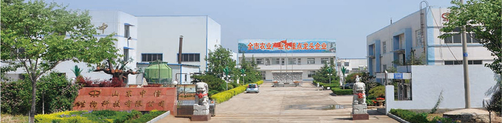
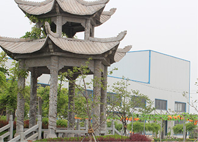
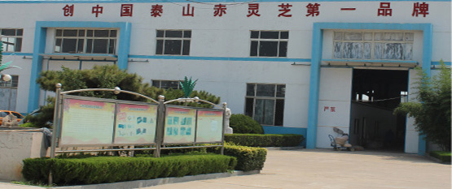
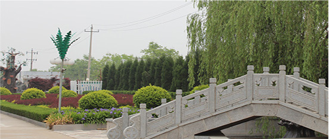

中信生物科技有限公司座落在“五岳独尊”的泰山脚下，泰安市高新技术开发区内，是一家集科研、培育、加工、销售为一体的泰山赤灵芝保健品专业生产厂家。公司自1994年成立以来，一直致力于灵芝保健产品的研发和生产，专心、专业20余年成就中国泰山赤灵芝领导品牌。
公司聘请上海农科院、山东大学等科研机构专家教授作为公司的顾问团队，始终跟踪和引领灵芝养生科研的前沿，为公司生产高品质的灵芝保健品导航。公司厂房建筑面积1.2万平方米，拥有高标准的GMP生产车间，精良的超细、破壁、提取、自动灌装生产设备，其中多功能提取流水线采用超声波提取、膜真空浓缩及低温喷雾干燥等技术，可提取近百种中草药，CO2超临界萃取孢子油是国内最先进的提取工艺技术。
公司通过ISO9001国际质量管理体系认证和GMP认证。先后被授予“山东食用菌十大品牌”、“泰安市农业产业化龙头企业”、“山东省旅游商品研发基地”、“最具潜力与竞争力品牌”、“中国企业诚信文化建设先进单位”等荣誉和称号。公司生产采取全产业链运作的模式，从赤灵芝灵芝菌种培育，到位于泰山脚下的基地养殖，生产基地深精加工，一整套灵芝产业链条，选料精良，确保质量。"药食同源”的祖国传统草本养生理念引领现代保健时尚潮流。
中信生物成立二十年来，始终以“用心爱人”为企业理念，坚持“科技先导、品质过硬”的宗旨，追求“人人享有健康”的目标，努力打造世界健康品牌！


